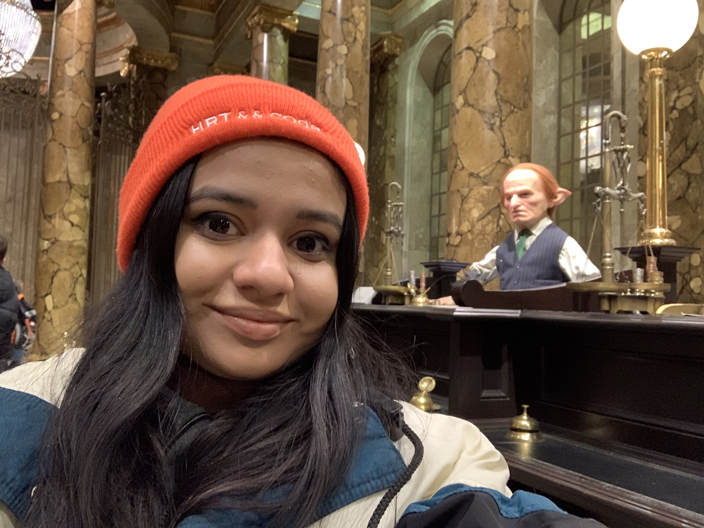

Projects
Home

Internships
About Me
I'm a Computer Science student who's based in Pittsburgh, PA, and I'm originally from Edison, NJ. I've been programming for a little over three years, and can code in Python, Html, CSS, Javascript, C, and Java. This summer, I'm working at Microsoft as a Software Engineering and Product Management intern. Last summer, in 2019, I worked as a Data Science Intern at EzOps, a fintech startup based in New Brunswick, NJ. While at CMU, I work as a research assistant to Khyathi Chandu (Phd Candidate) and Professor Alan Black within the Language Technologies Institute. Outside of school and work, I've participated in several hackathons and produced numerous accessibility-related projects, most of which center around helping individuals with Autism. Aside from tech, music is a huge part of my life. I've been playing the viola for 10 years, and I was in Chamber and Symphony orchestras all throughout high school and some of college. In my spare time, I love making viola covers (you can find a link to my most recent one here). I also really love anything to do with art and fashion. My favorite museum of all time is the Metropolitan Museum of Art, and I make it a point to go check out their annual fashion exhibits!